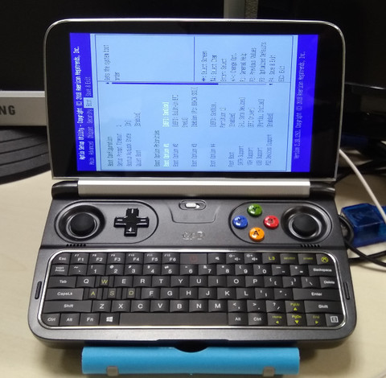
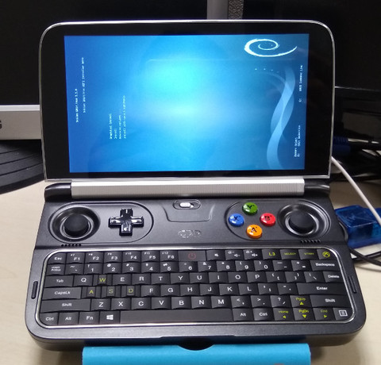
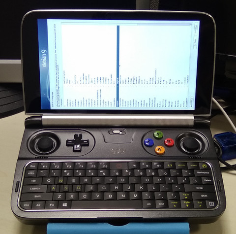
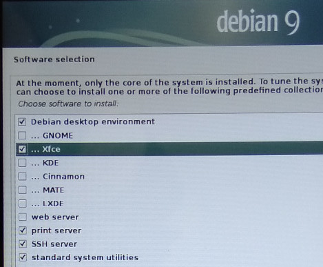
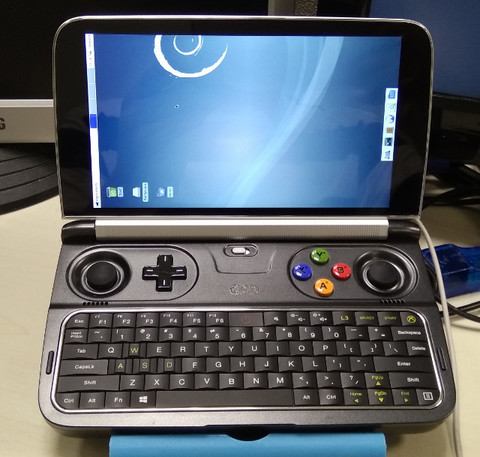
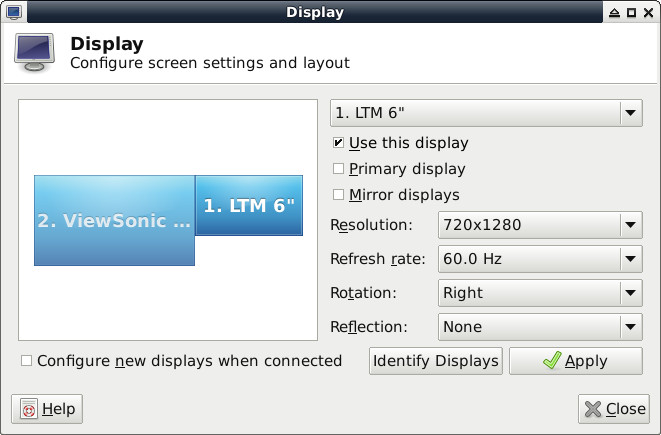
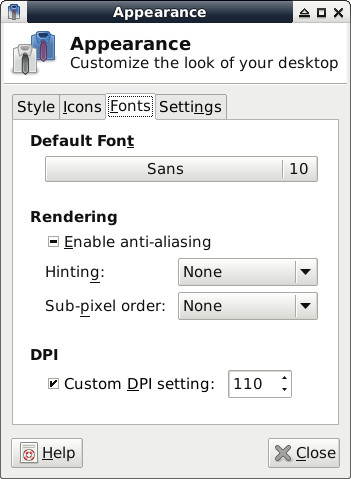
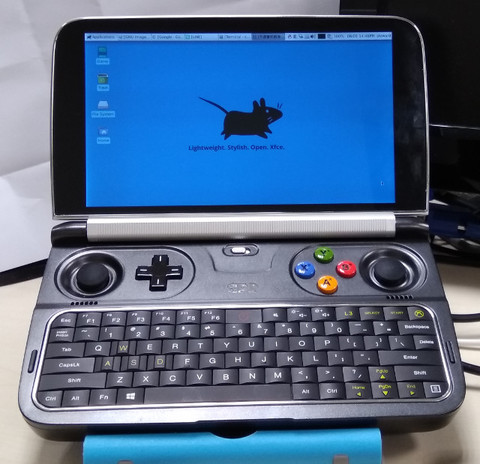

安裝方式：
1. 下載Debian 9.0 DVD
2. 設定USB開機(開機按下Delete進入BIOS)







$ cd $ wget https://github.com/steward-fu/gpdwin2/releases/download/v1.0/util.7z $ 7za x util.7z $ cd gpdwin2_util $ sudo ./run.sh $ sudo reboot
完成
